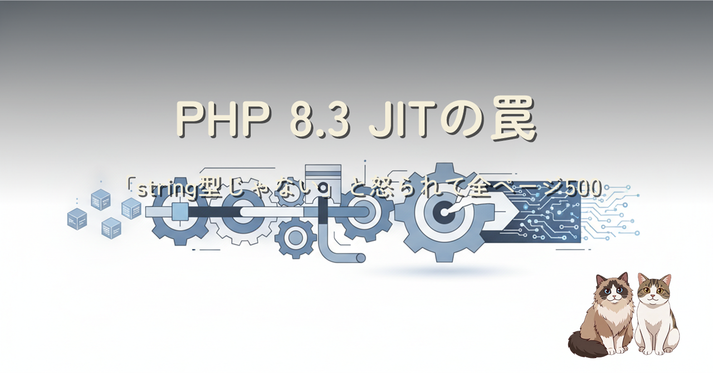
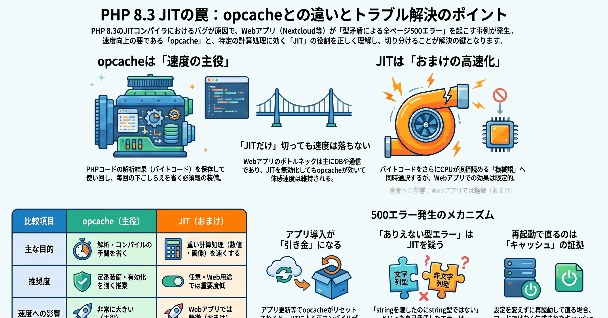

朝いちで Nextcloud が全ページ 500。きっかけはアプリを入れた直後でした。でも犯人はアプリではなく、PHP 8.3 の JIT。opcache との違いから、JIT が theming のコードを誤コンパイルして「string を渡したのに string 型じゃない」と怒る仕組み、そして JIT を切ってよい理由まで、切り分けの記録としてまとめました。
PHP には opcache（バイトコードの使い回し・速度の主役）と JIT（機械語への翻訳・おまけ）という二段のキャッシュがあります。今回は PHP 8.3 の JIT が theming の色取得コードを誤コンパイルし、値は正しいのにコード実行が壊れて全ページ 500 になりました。決め手は「設定を何も変えずに php-fpm を再起動しただけで直った」こと。opcache クリアで直る＝コードは正しい＝JIT の誤コンパイルが犯人、と確定できます。
JIT は CPU バウンドな計算処理向けで、DB・I/O 待ちが支配的な Web アプリではほぼ効きません。Nextcloud 公式の推奨 opcache 設定にも JIT は含まれず、opcache 本体は有効なまま残せるので、切っても性能への実害はありません。「アプリを入れた直後に落ちる」ように見えたのは、アプリ導入が opcache リセット＝JIT 再コンパイルの引き金になっていたためでした。

詳しい切り分けの全記録は Zenn 本文へどうぞ。